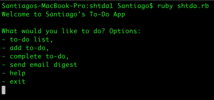
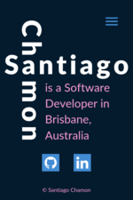
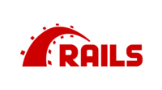
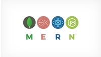

Santiago
Ch mon
Projects
Santiago's Humble To-Do App
This was my first project at Coder Academy. This is a ruby-based terminal app that is meant to stay open in a terminal tab of a Software Developer so they can keep track of the things they need to do. To-Do items can be marked as complete and you can also send yourself an email digest of all your To-Do items (if the project is set up correctly).
Personal Portfolio
This website is my second project at Coder Academy. This is my personal portfolio, created with a mobile-first approach. It's aim is to showcase who I am and my projects to the world.
Rails Project
This project will happen sometime during Term 2 of Coder Academy's Fast Track course. During this assignment we will learn everything backend with the Ruby on Rails framework. After going through the basics of development and html/css, we will learn how to deploy web apps in this introductory backend part of the course.
MERN Stack Project
This project will happen sometime during term 3 and it will help us solidify our knowledge of Full-Stack web development. After learning the fundamentals of web development, this part of the course is where we will cut our chops in a new framework with different practices. This is one of the most popular webdev frameworks out there so I'm excited!